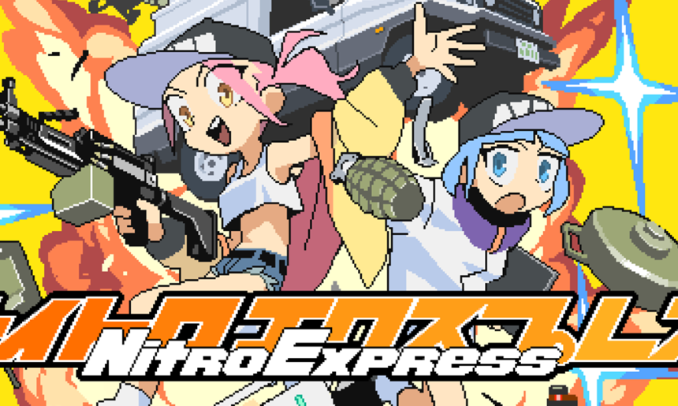
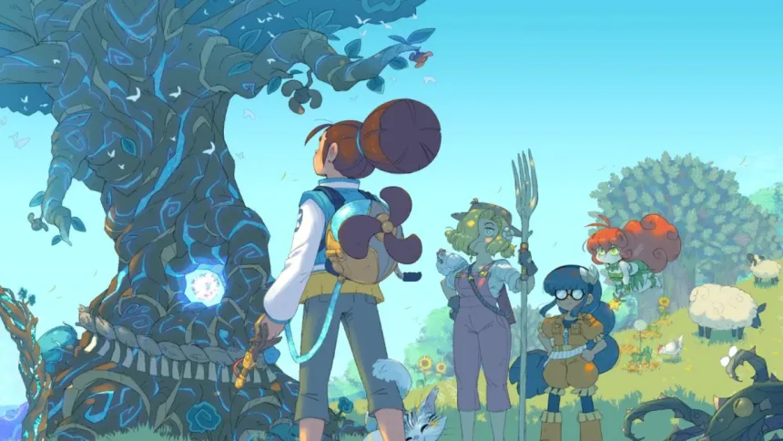
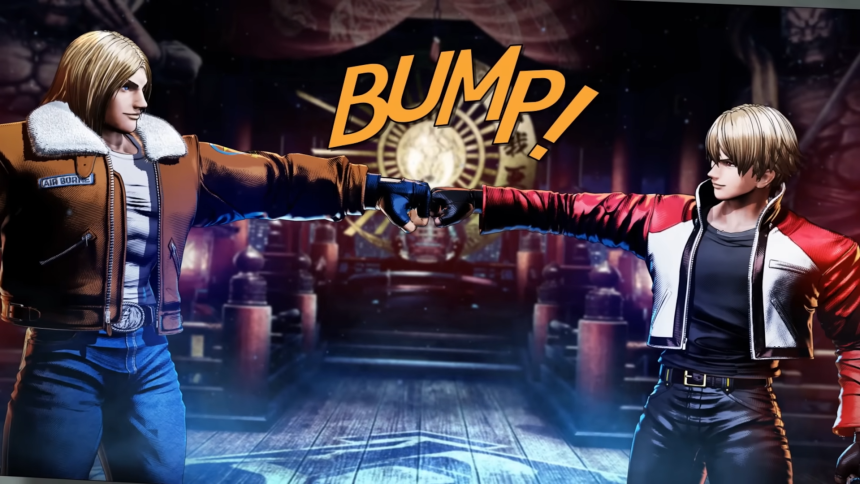

¡Prepárate para la aventura! En nuestra sección de **reseñas de videojuegos**, te sumergirás en los últimos lanzamientos y clásicos atemporales. Desde emocionantes RPGs hasta frenéticos shooters, te ayudamos a elegir tu próxima gran experiencia de juego.
Disparos estilo arcade con mucho sabor anime.
Este juego del estudio indie japonés Grayfax Software me atrajo con su colorido arte en pixeles y estética ‘anime’. Pensé que iba a ser un juego sencillo de disparos y plataformas, pero me equivoqué. Este es un juego bastante exigente en el que el posicionamiento y reflejos afilados son clave para salir adelante. Inicialmente esto me resultó atrapante y el reto de aprender los niveles para superarlos con el mayor puntaje posible me tuvo pegado jugando, pero eventualmente se volvió tedioso por culpa de su sistema de control y exagerada dificultad.
MIRALO AQUÍPurgando veneno un turno a la vez.
¿Les resulta familiar el nombre de Maliki? Es muy probable que hayan encontrado alguna vez a esta chica de pelo rosa en internet, pues es la protagonista de un webcomic que ya tiene bastantes años de vida y aunque su principal público se encuentra en Francia, fue traducido a varios idiomas incluyendo el español. Ahora, esta historia da el salto a otro medio: los videojuegos. En esta reseña vamos a conocer al juego Maliki: Poison of the Past y a descubrir si tiene algo que ofrecer a aquellos que no conocían la existencia de Maliki o si se trata de una obra solo para sus fanáticos. Este título es la primera obra del estudio independiente francés Blue Banshee, pero tiene a un poderoso aliado detrás. Es publicado por Ankama, una empresa muy reconocida por títulos tan populares como Dofus y Wakfu.
MIRALO AQUÍLuego de 26 años Terry Bogard y Rock Howard están de regreso para mostrarnos el futuro de los juegos de pelea de SNK.
Fatal Fury: City of the Wolves cuenta con varios modos para un solo jugador. El clásico modo arcade, en el cual tendremos que enfrentarnos a siete oponentes y Episodios de South Town. En este, los jugadores tendrán que explorar tres diferentes mapas de South Town. Cada uno de estos mapas cuenta varias misiones —una que otra secreta— y al completarlas algunas permiten desbloquear mejoras para que el personaje haga más daño, empiece con la barra de REV al máximo o recupere vida cada vez que le haga daño al oponente entre muchas otras. Estos elementos de RPG, si bien sirven para mejorar el desempeño de nuestro personaje, no son enteramente necesarias y se puede superar este modo sin necesidad de ellas.
MIRALO AQUÍ